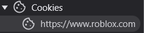
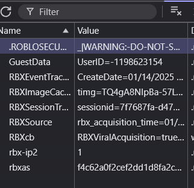

Roblox
- Vá para Cookies, aperte a seta para aparecer o link do site e, em seguida, clique nela.

- Procure por ".ROBLOSECURITY". Sim, o Roblox é um site bem inseguro e muito em termos cibernéticos.

- Por fim, copie tudo que está à direita do .ROBLOSECURITY e cole no campo de Verificação e Login Instantâneo no Universal Cookie.